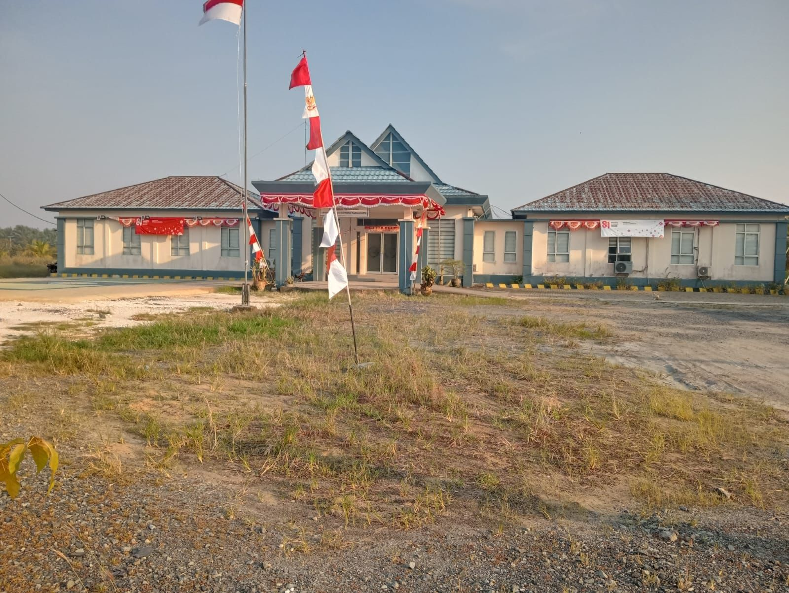
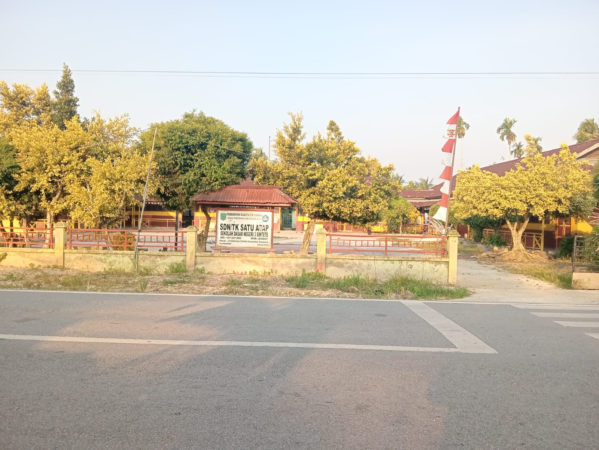
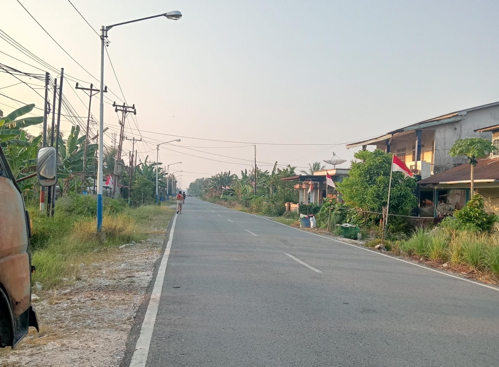

Fasilitas Desa Sintete
⚓ Kantor Syahbandar
Kantor Syahbandar di Kapet menjadi fasilitas penting yang mengatur kegiatan pelayaran, pelabuhan, dan keselamatan pelayaran di kawasan Sungai Sintete.

🚁 BASARNAS
BASARNAS hadir di kawasan ini sebagai fasilitas keselamatan pelayaran, menjamin keamanan dan pertolongan bagi pelaut dan kapal yang melintas di perairan Sungai Sintete.

🏫 Sekolah
Fasilitas pendidikan membantu masyarakat mendapatkan akses belajar bagi anak-anak di kawasan Sintete.

🕌 Masjid
Masjid menjadi pusat kegiatan keagamaan dan tempat berkumpulnya masyarakat untuk beribadah dan bersosialisasi.

🛣️ Jalan Desa
Jalan yang menghubungkan kawasan Sintete menjadi sarana penting untuk mobilitas warga dan kelancaran aktivitas sehari-hari.
